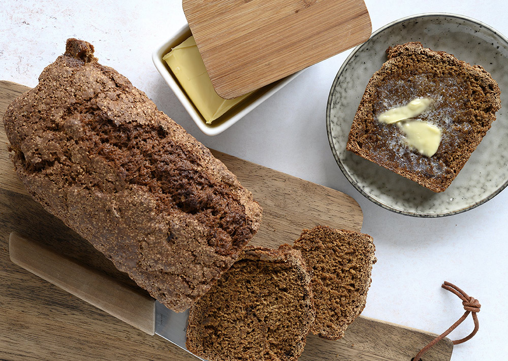

Her burde der stå noget om kage

Ingredienser:
- 500 g hvedemel
- 400 g muscovadosukker, eller brun farin
- 1 tsk natron
- 1 tsk bagepulver
- 2 tsk kanel
- 1 tsk stødt ingefær
- 1 tsk hele nelliker, stødt
- 1/2 tsk allehånde, stødt
- 3 1/2 dl mørk øl, eller hvidtøl
Fremgangsmåde:
- Bland de tørre ingredienser sammen i en skål og rør derefter øl i. Rør til dejen er helt jævn og hæld den så i en sandkageform beklædt med bagepapir eller grundigt smurt med smør.
- Bag ølkagen i en forvarmet ovn ved 175 grader i varmluft 50-60 minutter. Tjek med et træspyd at den er gennembagt.
- Når ølkagen er færdig, tages den ud af formen og afkøles let på en bagerist, inden der skæres gavmilde skiver som smøres og spises med iskoldt smør.
- Ølkagen kan sagtens holde sig i nogle dage, i en lufttæt bøtte eller lign, ved stuetemperatur.
Tilbage til forsiden